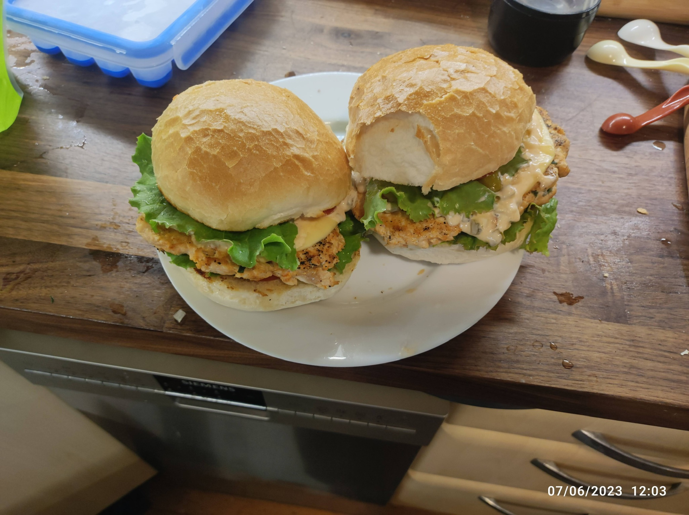

Description
Buns and meat are the most important parts of the burger.
Ingredients
For Tangzhong
- 2 tbsp bread flour
- 2 tbsp water
- 4 tbsp whole milk
For Dough
- 120g whole milk
- 1 tbsp instant yeast (30g fresh yeast)
- 320g bread flour
- 1 tsp salt
- 35g granulated sugar
- 1 egg yolk
- 3 tbsp butter
Steps
- For the tangzhong, add all ingredients together over medium heat, and constantly whisk until it becomes a paste.
- For the primed yeast mixture, add water, whole milk, and instant yeast, and mix together. Store in a warm area and let sit for 8 minutes.
- n a stand mixer bowl, add the dry ingredients. Slowly add in milk and yeast mixture, the tangzhong mix. Let homogenize. When the dough starts coming together, add the egg and egg yolk. Then increase speed to medium-low until incorporated. Gradually add butter until incorporated meaning when the dough is mixed, nothing sticks to the sides.
- Lightly grease a medium-sized bowl, gently fold and place seam side down. Place a damp towel on the dough and bring to a warm area to proof for 1 to 1.5 hours
- To shape, punch the dough down then flour work surface
- Divide dough into six even pieces around 95 to 105 g
- To shape the individual buns, gently stretch flipped side down and fold to the center. Repeat this process for the whole segment of dough, then flip upside down.
- Rotate dough 90 degrees and pull towards you. Repeat two more times to complete rotation around the whole perimeter.
- Place shaped dough in a rimmed sheet tray lined with parchment paper. Leave 2.5 in of space or 6 cm apart.
- Cover with a similar-sized sheet tray that is flipped so that the dough will not dry out.
- Let rise at room temperature for another 1-2 hours, or until doubled.
- Before baking, brush with egg wash (1 whole egg plus a splash of milk)
- Bake at 190C for 18 minutes until golden brown.